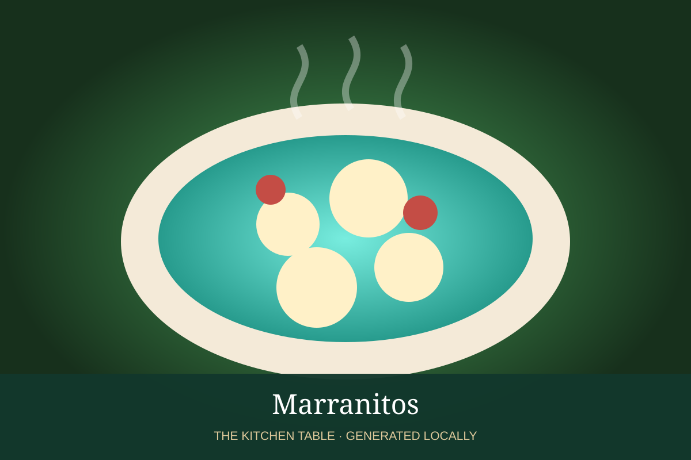

MEXICAN · DESSERTS & DRINKS
Marranitos
Pig-shaped Mexican gingerbread cookies sweetened with piloncillo and warm spices.

Ingredients
- 3 cups flour
- 1 tsp baking soda
- 1 tsp cinnamon
- 1/2 tsp ginger
- 6 tbsp butter
- 3/4 cup piloncillo syrup
- 1 egg
- 2 tbsp milk
Method
- Whisk flour, baking soda, and spices.
- Beat butter with piloncillo syrup and egg; add dry ingredients and enough milk for a soft dough.
- Roll thick and cut with a pig-shaped cutter.
- Bake at 350°F until puffed and lightly browned.